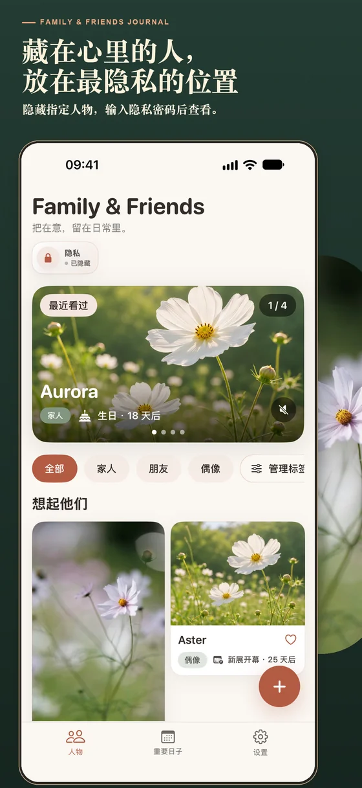
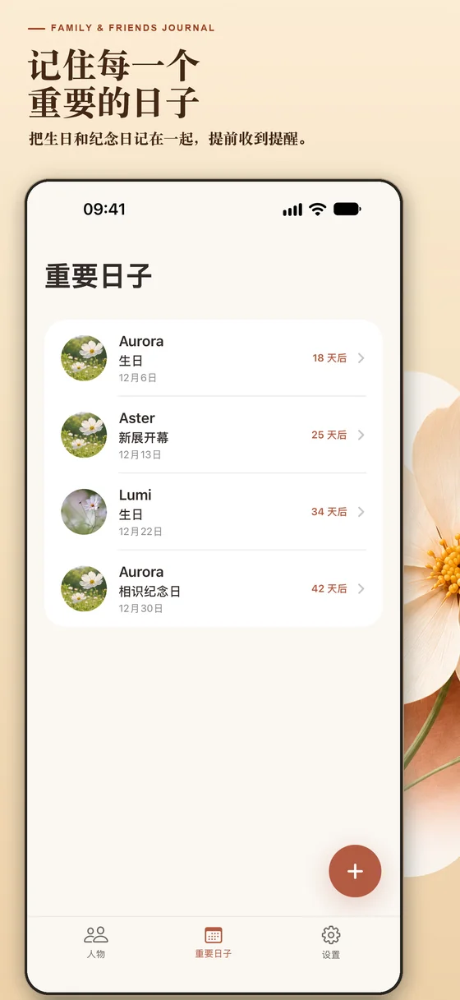

建立人物档案与相册
设置照片或实况照片封面，用照片和视频保存共同回忆，也可用自定义字段记下重要细节。
iPhone · iOS 17 或更高版本
把每位亲友的照片、回忆和生日放在一起，设置重要日期提醒，也能按人归档私人文件。
人物档案和导入的媒体保存在 iPhone 上。

为父母、伴侣、孩子或好朋友建档，记下你想保留的点滴。
设置照片或实况照片封面，用照片和视频保存共同回忆，也可用自定义字段记下重要细节。
保存生日和其他重要日期，在本机设置提醒，也可以按需添加到 Apple 日历。
扫描、拍摄或导入文件。可以将指定人物设为私密档案，用专用密码查看。
打开「重要日期」，查看接下来的生日和纪念日以及对应人物。只为想提醒的日期设置通知。

可以。应用支持公历、农历生日，以及本地日期提醒。
应用没有开发者服务器。1.0 版的档案和导入媒体保存在 iPhone 上，暂未启用 iCloud 同步。
免费支持 3 人，每人可添加 10 个媒体项目。可选的一次性 Pro 购买会解除这两项限制。